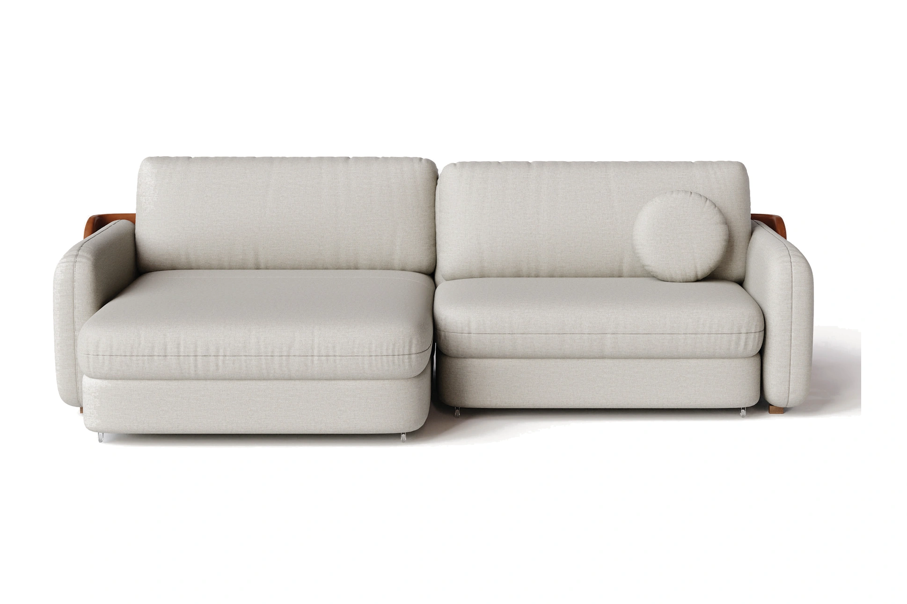
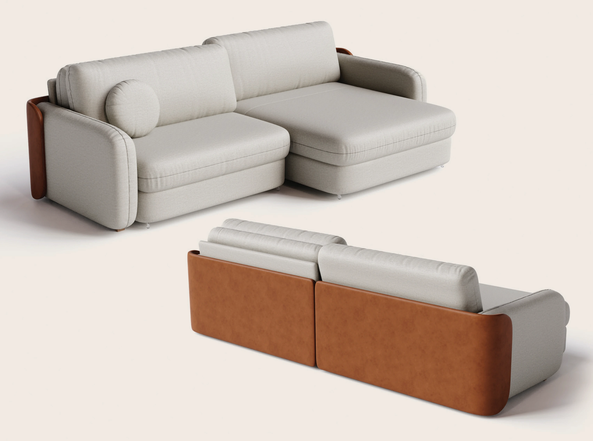

LE MOND
Sofá Naturale.
Combinação de linho 10 e corino 173 sobre pillowtop de 15 cm com molas ensacadas e espuma D-28 Super Soft. Mecanismo retrátil de 111 cm a 146 cm com acionamento elétrico opcional.
Consultar disponibilidade

Ficha Técnica
Especificações & Medidas Exatas
Linha / Curadoria
Le Mond · Design Autoral
Tecido / Ref.
Linho 10 e Corino 173
Densidade Espuma
D-28 (Super macio)
Camada de Conforto
Pillowtop 15 cm + Molas Ensacadas
Pés
Madeira de 5 cm / 16 cm
Altura Total
83 cm
Altura Assento
44 cm
Profundidade Assento
55 cm (fechado) / 100 cm (aberto)
Altura do Braço
60 cm
Largura dos Assentos
80, 90, 100, 110 ou 120 cm
Larguras Totais
202, 222, 242, 262 ou 282 cm
Profundidade Total
111 cm (fechado) / 146 cm (aberto)
Mecanismo
Retrátil com abertura elétrica opcional